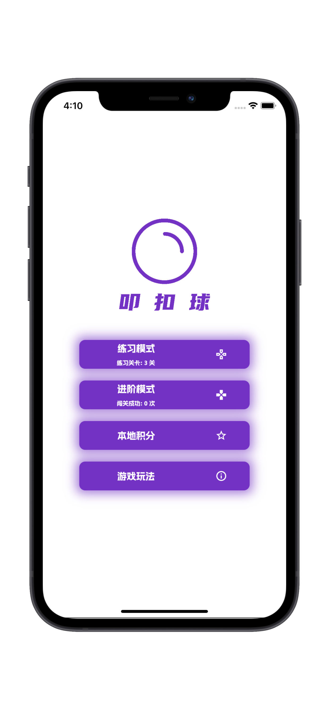

叩扣球
叩扣球是一款从思维棋中获取灵感的“思维棋变种”，是一款逻辑益智类的棋盘小游戏。
点击一个小球位置放置或者拿出小球。 小球会辐射周围的其他小球。每一局都要在规定步数内拿出所有小球哦。在 “练习模式” 中练习自己对于棋盘的掌控思维能力，“练习模式”的每一关都没有时间限制！或进入 “进阶模式” 挑战自己！，“进阶模式” 的每一关都有 30 秒的倒数时间限制！如果没有玩耍过相似类型的游戏，推荐您先在 “练习模式” 中练习思维。
- 联系电话：+86-13890218212----|----邮箱：kouball@awerbal.com -